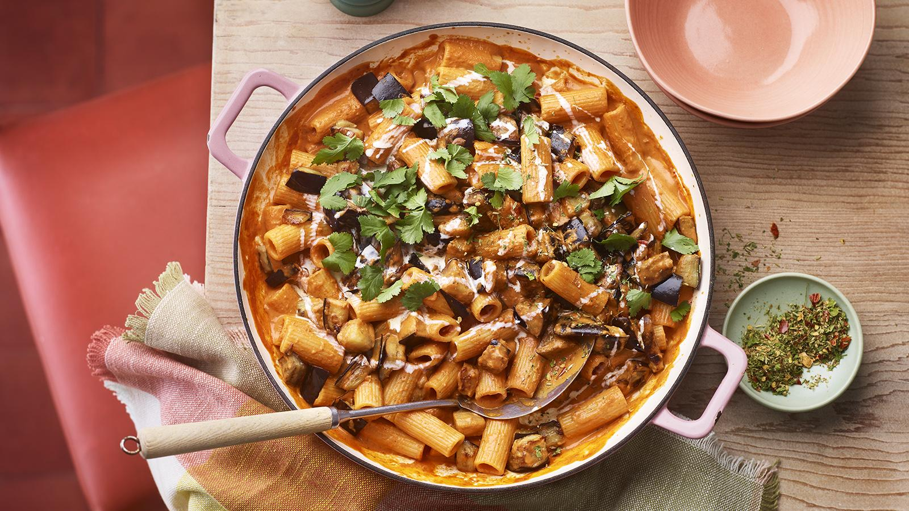

Home
Lasagna

Ingredients
For the rigatoni makhani
- 2 medium aubergines, washed and cut into 1½x1½cm/⅝x⅝in cubes
- 5 tbsp olive oil
- 75g/2½oz butter
- 1 medium onion, grated
- 2 tsp grated fresh root ginger
- 3 large garlic cloves, crushed
- 1 tbsp tomato purée
- 500g/1lb 2oz tomato passata
- ¼ tsp ground turmeric
- ½ tsp chilli powder
- 2 tsp hot smoked paprika
- 2 tsp ground coriander seeds
- ½ tsp ground cumin seeds
- 3 cardamom pods, seeds ground
- 2 tsp garam masala
- ½ tsp dried fenugreek leaves (kasoori methi), rubbed between your palms
- 1½ tbsp brown sugar
- salt
- 250ml/9fl oz hot water
- 175ml/6fl oz double cream, plus extra to serve
- 300g/10½oz rigatoni
- small handful chopped fresh coriander leaves
For the spice sprinkle
- 1 tsp fennel seeds, coarsely ground
- 1 tsp dried oregano
- 1 tsp chilli flakes
- 1 tsp dried fenugreek leaves (kasoori methi), rubbed between your palms
Method
- For the tomato sauce, heat the olive oil in a large pan, add the onions and fry gently until softened.
- Add the tomatoes, season with salt and freshly ground black pepper and stir in the basil. Reduce the heat and simmer gently for about 25 minutes, or until the tomatoes have broken down and the sauce is reduced. Set aside.
- For the meatballs, place all the meatball ingredients, except the oil and flour, into a bowl and mix well. Using your hands, shape the mixture into walnut-sized balls.
- Heat a generous amount of olive oil in a large frying pan. Dust the meatballs in flour, then fry in the hot oil until golden-brown on all sides. Do this in batches, depending on the size of your frying pan. Drain on kitchen paper and set aside.
- Preheat the oven to 200C/400F/Gas 6.
- For the lasagne, spread a little of the tomato sauce over the base of a large ovenproof dish.
- Cover with a layer of lasagne sheets, then spoon over some more tomato sauce.
- Sprinkle with parmesan, followed by some egg slices and a few meatballs. Dot over some ricotta and pieces of mozzarella.
- Top with more sheets of pasta and repeat the layers with the remaining ingredients, finishing with tomato sauce, meatballs, eggs and both cheeses.
- Cover the dish with foil and bake in the oven for about 30 minutes.
- Remove the foil and cook for a further five minutes, or until the cheese has melted and the top is golden-brown. Serve immediately.